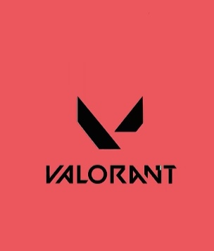

无畏契约一门通无畏契约一门通
一个面向《无畏契约》新手和普通玩家的地图点位教学工具。用户选择地图、输入想玩的点位，系统即可模拟推荐适合角色，并给出常用道具点位、释放步骤和资料入口。
核心功能范围
初版 demo 聚焦“小而完整”的演示闭环：从地图和位置输入，到角色推荐，再到点位教学摘要。
用户使用路径
围绕“我在这张地图打这个位置”来组织内容，比单纯的视频合集更贴近真实游戏准备场景。
先确定当前想练的地图，减少无关信息干扰。
描述自己要打的点位、站位、进攻路线或回防场景。
AI 解释为什么适合某个角色，以及角色在该位置的作用。
查看道具点位、瞄准参考和视频资料，进入游戏验证。
分级课程体系
课程不一次性全部铺开，而是按玩家水平分层展示。点击标签后，只展示当前等级需要学习的课程卡片。
认识地图结构
学习包点、连接区、长短通道和常见交火区域，先建立地图方向感。
理解角色定位
区分决斗、控场、先锋和哨卫的基础职责，知道自己该在队伍中做什么。
第一套进点流程
用“封烟、清点、下包、架枪”的顺序理解一回合最基础的进攻节奏。
常用道具点位
学习每张热门地图的基础烟、闪、侦查和守包道具，形成稳定可复用的打法。
默认控图思路
理解开局如何拿信息、控关键区域，并根据敌方前压或回防做出调整。
回防与守包
掌握回防站位、交叉火力和道具拖时间，减少“会下包但守不住”的问题。
阵容与地图适配
根据地图结构、队伍角色池和对手习惯，选择更适合的阵容与关键点位策略。
假打与转点决策
学习如何用道具和站位制造压力，再判断对方防守重心，完成转点或二次进攻。
复盘与个人提升
从死亡位置、道具价值和团队沟通三个角度复盘，持续优化自己的地图选择和站位。
教学卡片示例
下面是 demo 中的点位内容呈现方式，后续可以替换为真实地图截图、视频链接和更多角色数据。
推荐角色：幽影 / Omen
适合在进攻默认阶段封锁关键视野，帮助队友安全推进，并能通过传送制造站位变化。
释放步骤
站在 A 点入口外侧，瞄准高墙边缘参考线，先封近点烟，再配合队友清理包点近角。
注意事项
如果对方前压频繁，优先保留一颗烟用于断后；不要单独进点，等待信息位或闪光配合。